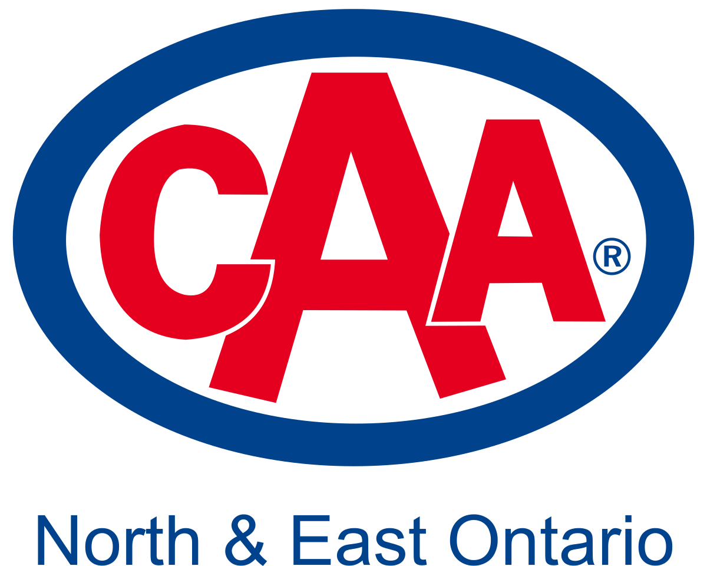

The Video Encoder, CAA North & East Ontario's internal placement encoding tool, turns one finished ad into a file for every placement it is running on, and checks each file against that placement's spec sheet. Your video never leaves your computer.
Drop the finished MOV or MP4 on the box. The first visit downloads the encoder (about 31 MB, once). The tool then looks at your video for about a minute: its length, frame rate, sound level, repeated frames and black bars. It shows what it found without judging anything yet, because that depends on where the ad is going.
Click every placement the ad is running on. You can do this while the video is still being checked.
The tool works out the fewest files that cover your placements. Placements whose rules overlap share one file; for example Rogers, Prime Video and YouTube all take the same MP4. A placement gets its own file when its rules clash with the others (Corus has a lower bitrate limit, CTV stations want 10 seconds of black at the end). Cinema spots, Cineplex and Landmark, always get a file of their own.
Each file gets one slip with everything about it:
Already good to go: if your video, exactly as it is, already meets a file's spec (file type, size, frame rate, exact length, bitrate, sound), its slip says so in green and that file is not made. Send your video as it is. The file name is not part of this check, because a file can be renamed at any time; if a placement has a naming rule, the slip reminds you to rename it.
Click Make the files. In Edge or Chrome you choose where to save first. Keep the tab open and in front. Each slip then shows whether its file passed the check, with a full report underneath.
placements.json, and the placement list check shows where a new or changed spec fits.A passing check means the file matches the published spec. It is not a guarantee: a placement can still reject an ad for other reasons. Have someone review every file before it is sent.